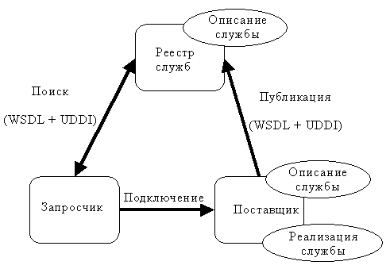
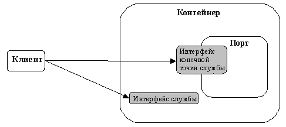

| Концепция: Web-службы J2EE |
 |
|
| Связанные элементы |
|---|
Что такое Web-служба J2EE?Архитектура Web-службы состоит из трех основных элементов: реестра службы, провайдера службы и инициатора службы. Схема взаимодействия этих трех элементов приведена на рисунке 1.
 Провайдер службы начинает свою работу с определения интерфейса службы с помощью абстрактного документа Описание службы, используя Язык описания Web-служб (WSDL). Это абстрактное описание связывается с транспортным протоколом и кодировкой, а также с адресом в конкретном определении службы, чтобы определить конкретный экземпляр службы, называемый также конечной точкой службы, или портом. Это конкретное описание можно затем опубликовать в реестре службы, таком как Universal Description, Discovery and Integration (UDDI), сделав его доступным любому инициатору службы. С помощью этого описания инициатор службы выбирает и применяет конкретную реализацию службы для Web-службы. Web-служба J2EE состоит из набора таких портов, работающих в контейнере. Контейнер служит посредником при доступе к службе и предоставляет среду выполнения. Клиентом Web-службы может быть другая Web-служба, любой компонент J2EE или произвольное приложение Java. Использовать Web-службы могут и другие приложения, не являющиеся приложениями Java или Web. Панель клиента Web-службыПанель клиента Web-службы предоставляется провайдером портов (провайдером службы) и контейнером. Как показано на рисунке 2 ниже (серым цветом), клиентская панель состоит из интерфейса службы и интерфейса конечной точки службы.
 Для обращения к порту Web-службы клиент сначала находит интерфейс службы с помощью API JNDI. С помощью интерфейса службы клиент находит методы для доступа к порту и реализации Web-службы через интерфейс конечной точки службы. В панели клиента порт считается объектом без сохранения состояния. Интерфейсы службы и конечной точки службы определяются спецификацией JAX-RPC; однако характеристики интерфейса службы определяются документом Описание службы WSDL, предоставляемым провайдером Web-службы. Панель сервера Web-службыВ панели сервера Web-службы отображается реализация бизнес-логики службы. В соответствии с правилами J2EE 1.4, конечная точка Web-службы может быть реализована на основе одного из следующих подходов:
Дополнительная информация об этих двух подходах приведена в разделе Указания: идентификация сеансовых объектов EJB для конечной точки на базе сеансовых объектов EJB и разделе Указания: идентификация сервлетов для конечной точки на базе сервлетов. СправочникиОсновным справочником для этой страницы служит спецификация Web Services for J2EE (JSR 109). |
© Copyright IBM Corp. 1987, 2006. Все права защищены.. |